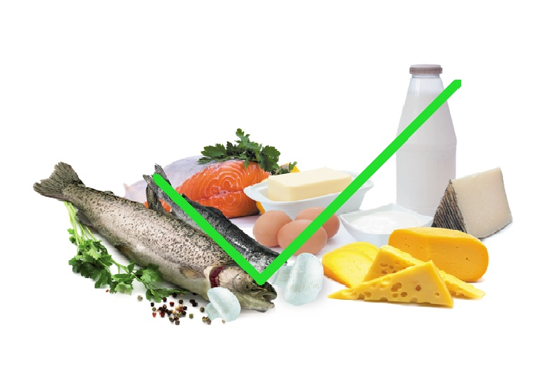
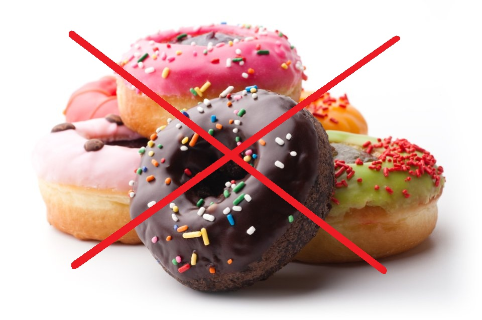

Dieta dla kobiet to przede wszystkim zdrowa dieta, oparta na zasadach prawidłowego żywienia. Dieta powinna dostarczać kobiecie odpowiednią ilość składników odżywczych oraz kalorii. Żadna kobieta nie powinna głodzić się, aby za wszelką cenę zgubić kilka kilogramów, ponieważ prowadzi to do osłabienia organizmu. Utrata wagi powinna być stopniowa, wówczas kobieta nie wygląda na chorą lub zmęczoną. Prawidłowe odżywianie polega między innymi na wybieraniu produktów zawierających jak najmniejsze ilości tłuszczów nasyconych oraz spożywanie warzyw i owoców, które dostarczają substancji antyoksydacyjnych.
Co kobiety powinny włączyć do diety?
Czego kobiety powinny unikać w diecie?
Dieta odchudzająca dla kobiet
Co kobiety powinny włączyć do diety?
Aktywna kobieta potrzebuje odpowiedniej ilości energii, witamin i minerałów, aby wspomóc swój organizm w codziennym funkcjonowaniu. Istnieją takie produkty, które pozwolą schudnąć, równocześnie zapewniając zdrowie.

Mleko i przetwory mleczne (jogurty, sery) - zawierają dużo wapnia, który buduje kości. Jest to szczególnie ważne dla pań narażonych na osteoporozę. Produkty mleczne zawierające probiotyki (jogurty, kefiry) zapobiegają zaparciom oraz wzmacniają układ odpornościowy. Jogurty owocowe nie są dobrym źródłem białka, ponieważ zawierają spore ilości węglowodanów. Dlatego podczas diety odchudzającej nie należy ich spożywać. Ponadto w trakcie stosowania diety odchudzającej należy wybierać produkty jak najmniej przetworzone oraz o niskiej zawartości tłuszczu.
Tłuste ryby - czyli makrela, łosoś, tuńczyk czy śledź zawierają wielonienasycone kwasy tłuszczowe omega-3, niezbędne do prawidłowego funkcjonowania organizmu. Zapobiegają chorobom serca, nadciśnieniu, chorobom o podłożu zapalnym, a nawet depresji.
Warzywa i owoce - świeże i ze skórką są najkorzystniejsze dla zdrowia. Większość witamin i minerałów w nich zawartych nie zostaje zniszczona przez mrożenie, natomiast inne sposoby przetwarzania i przedłużania trwałości nie są już tak korzystne. Winogrona oraz czerwone i niebieskie jagody, oprócz witamin zawierają także antocyjany, silne przeciwutleniacze, które chronią komórki przed działaniem wolnych rodników. Natomiast resweratrol obecny w winogronach, chroni przed rozwojem miażdzycy oraz wykazuje właściwości przeciwzapalne.
Rośliny strączkowe - dostarczają pełnowartościowego białka oraz błonnika. Są niezbędne w każdej zdrowej diecie odchudzającej. Dzięki zawartym w nim składnikom (szczególnie rozpuszczalnym frakcjom błonnika) są polecane osobom zmagającym się ze zbyt wysokim poziomem „złego” cholesterolu we krwi. Liczne badania wskazują iż substancje zawarte w soi wykazują działanie przeciwnowotworowe, szczególnie wobec raka piersi oraz zapobiegają chorobom układu sercowo-naczyniowego. Pomagają także zmagać się z objawami menopauzy oraz PMS (zespół napięcia przedmiesiączkowego), na które cierpi wiele kobiet.
Produkty pełnoziarniste - czyli pełnoziarnisty chleb, ryż brązowy, makarony pełnoziarniste, stanowią świetne źródło błonnika pokarmowego.
Czego kobiety powinny unikać w diecie?
Każda aktywna kobieta, która pragnie atrakcyjnie wyglądać powinna unikać niezdrowych produktów, takich jak:

tłuste mięsa (wieprzowina, kaczka),
tłuste wędliny (pasztety, mielonka, parówki),
fast-foody,
potrawy smażone na tłuszczu,
słone potrawy (paluszki, chipsy, orzeszki solone),
słodycze (torty, ciasta z kremem, pączki),
alkohol (piwo, wódka).
Najlepiej jest spożywać co najmniej 5 posiłków dziennie w odstępach 3-4-godzinnych, dzięki temu orgaznizm nie będzie „domagał” się niezdrowych przekąsek. Kobieta nie powinna zbyt często spożywać produktów smażonych na oleju, ponieważ w trakcie obróbki termicznej tworzą się toksyczne związki (WWA). Do smarowania pieczywa zamiast margaryny, która zawiera konserwanty oraz barwniki, należy stosować masło lub nasączać pieczywo oliwą z oliwek. Źródło węglowodanów złożonych powinny stanowić: ryż brązowy, kasza gryczana i jęczmienna, pieczywo pełnoziarniste. Spośród dostępnych na rynku alkoholi najbardziej korzystne dla zdrowia jest czerwone wino, oczywiście spożywane w rozsądnych ilościach (maksymalnie lampka dziennie), ponieważ zawiera substancje przeciwutleniające.
Dieta odchudzająca dla kobiet
Najzdrowsza dieta odchudzająca dla kobiet to taka, w której wartość energetyczna pokrywa ilość energii zużywanej w trakcie podstawowej przemiany materii, czyli około 1500 kcal. Nawet najskuteczniejsza dieta odchudzająca nie przyniesie pożądanych efektów, jeśli w jej trakcie nie zwiększymy aktywności fizycznej.
Oto kilka porad dietetycznych, do których należy się zastosować, aby odchudzanie zakończyło się sukcesem i nie pociągnęło za sobą efektu jo-jo (czyli powrotu do wagi sprzed odchudzania lub nawet przytycia).
Zmiany w diecie należy wprowadzać stopniowo.
Zdrowa dieta dla kobiet powinna być modyfikacją obecnej.
Restrykcyjna dieta odchudzająca dla kobiet nie powinna się gwałtownie kończyć - wszystko, co organizm otrzyma po okresie odchudzania, zamieni na tłuszcz.
Pomijanie całej grupy produktów spożywczych nie jest dobrym rozwiązaniem, z wyjątkiem słodyczy.
Zajadanie problemów, a następnie głodowanie przez dwa dni na pewno nie przyczyni się do utraty wagi.
Zdrowa dieta dla kobiet, niezależnie od tego, czy ma być dietą odchudzającą czy po prostu sposobem na utrzymanie zdrowia i sił witalnych, musi być przede wszystkim konsekwentna.